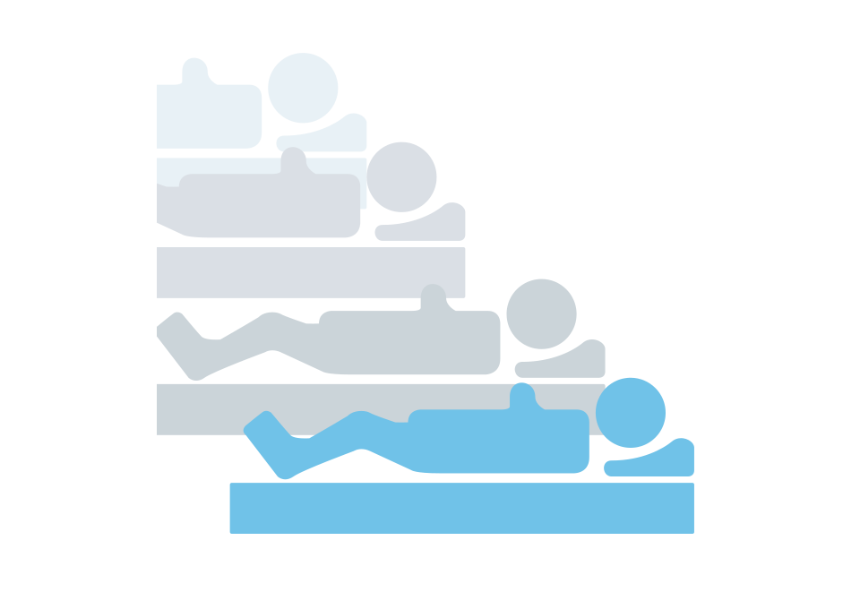
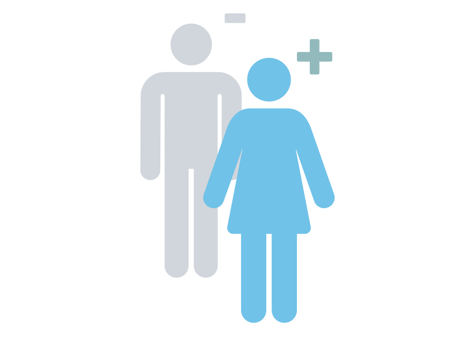
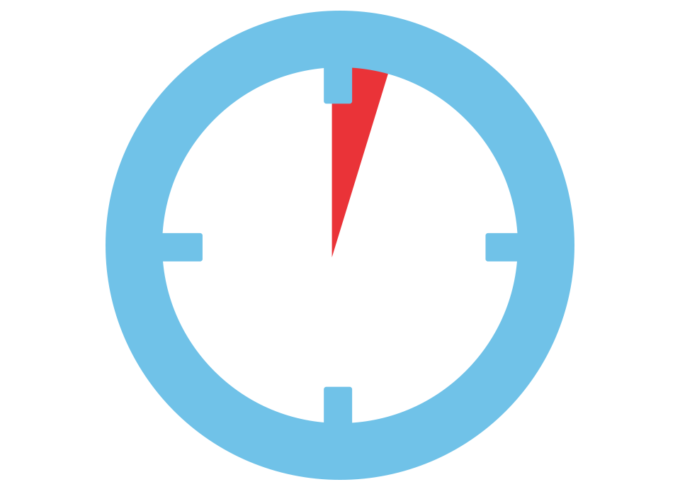

ΣΥΜΒΟΥΛΕΥΤΕΙΤΕ ΕΝΑΝ ΦΛΕΒΟΛΟΓΟ:
«ΦΛΕΒΕΥΡΩΣΗ ΣΤΙΣ ΓΥΝΑΙΚΕΣ - Η ΠΑΝΟΥΚΛΑ ΤΟΥ 21ΟΥ ΑΙΩΝΑ» 57% ΤΩΝ ΑΣΘΕΝΩΝ ΠΕΘΑΙΝΟΥΝ ΣΕ 3-4 ΧΡΟΝΙΑ ΑΠΟ ΘΡΟΜΒΟΥΣ ΚΑΙ ΚΑΡΚΙΝΟ.
Εισαγωγή: Η Ανεξάρτητη Ένωση Ειδικών Ιατρών (UIEM) έχει δηλώσει επίσημα ότι η φλεβεύρωση είναι μια από τις πιο επικίνδυνες μαζικές ασθένειες της σύγχρονης εποχής. Σύμφωνα με τα στατιστικά στοιχεία των τελευταίων 20 ετών, το 57% των ασθενών με φλεβεύρωση πεθαίνουν τα πρώτα 3-4 χρόνια μετά τη νόσο, εκ των οποίων το 29% - τον πρώτο 1,5 χρόνο. Οι αιτίες θανάτου είναι διαφορετικές: από θρομβοφλεβίτιδα έως τροφικά έλκη και καρκινικούς όγκους.
ΠΩΣ ΝΑ ΣΩΣΕΙΣ ΤΗ ΖΩΗ ΣΟΥ ΑΝ ΕΧΕΙΣ ΦΛΕΒΕΥΡΩΣΗ, ΣΗΜΕΡΑ ΜΙΛΑΜΕ ΜΕ ΤΟΝ ΣΥΜΒΟΥΛΟ ΥΓΕΙΑΣ, ειδικό φλεβολόγο Victoria Maurer.
Victoria Maurer
Ανώτερος ειδικός φυσικής ιατρικής, φλεβολόγος, συγγραφέας 15 βιβλίων και εξουσιοδοτημένος σύμβουλος υγείας ραδιοφώνου και τηλεόρασης.
Εμπειρία - 15 χρόνια
Δημοσιογράφος : Καλημέρα Victoria! Πρώτη στατιστική ερώτηση: είναι σωστά τα στοιχεία του UIEM και συμφωνείτε με αυτά;
Victoria Maurer: Μέχρι σήμερα, το UIEM είναι ίσως η μόνη διεθνής ιατρική δομή, που μπορεί κανείς να εμπιστευτεί. Εκτός βέβαια από τον Ερυθρό Σταυρό. Αλλά οι τελευταίοι ασχολούνται κυρίως με πρακτικές δραστηριότητες, όπως λένε, «στο χωράφι». Ενώ το UIEM ακολουθεί τις παγκόσμιες τάσεις και αναπτύσσει μια στρατηγική για την προστασία της ανθρωπότητας από ασθένειες. Και αν μιλάμε συγκεκριμένα για αυτή την περίπτωση, τότε έχουν κάθε λόγο να δίνουν σημασία στην φλεβεύρωση. Και στην Ελλάδα καταγράφουμε κατακόρυφη αύξηση της θνησιμότητας από τη νόσο αυτή τις τελευταίες δεκαετίες. Και δεδομένης της μαζικής εξάπλωσης της φλεβεύρωσης (των κιρσών), αυτό είναι ένα εξαιρετικά σοβαρό πρόβλημα.
Με άλλα λόγια, τα δεδομένα UIEM υποστηρίζονται από στατιστικά στοιχεία. Και, από όσο γνωρίζω, το ίδιο καταγράφουν και οι συνάδελφοί μας σε άλλες χώρες.
Δημοσιογράφος : Γιατί ακριβώς είναι επικίνδυνη η φλεβεύρωση; Είναι απλοί κιρσοί, έτσι δεν είναι;
Victoria Maurer: Σοβαρά κάνετε αυτή την ερώτηση; Οι απλοί κιρσοί όπως λέτε, στην πραγματικότητα, είναι μια εξαιρετικά επικίνδυνη ασθένεια που οδηγεί σε σημαντικό αριθμό επιπλοκών. Για να γίνει κατανοητό, ας δούμε συγκεκριμένα παραδείγματα.
Πρώτον, φυσικά, αξίζει να θυμηθούμε τη θρομβοφλεβίτιδα. Σε γενικές γραμμές, αυτό συμβαίνει όταν το αίμα συγκεντρώνεται σε θρόμβους στις φλέβες. Αυτό μπορεί να οδηγήσει σε οτιδήποτε, από τη ρήξη ενός θρόμβου αίματος και τη διείσδυσή του στην καρδιά ή τους πνεύμονες, ακολουθούμενη από θάνατο, σε πλήρη απόφραξη της φλέβας, ακολουθούμενη από θάνατο και αποσύνθεση μέσα στο πόδι. Αυτό ανοίγει την πόρτα στη γάγγραινα, η οποία οδηγεί σε πλήρη απώλεια άκρων. Η θρομβοφλεβίτιδα είναι μια εξαιρετικά επικίνδυνη επιπλοκή που εμφανίζεται στο 75-80% των ασθενών με κιρσούς, αλλά στις περισσότερες περιπτώσεις αγνοείτε εντελώς.
Δεύτερον, πρόκειται για τροφικά έλκη. Εμφανίζονται λόγω κιρσών και είναι εξαιρετικά επικίνδυνα. Η βλάβη σε μια φλέβα ή απλά ο απρόσεκτος χειρισμός των κιρσών μπορεί να προκαλέσει έλκος. Από τη στιγμή που έχουν προκύψει, είναι σχεδόν αδύνατο να καταστραφούν εντελώς. Μπορούν να εντοπιστούν μόνο με τη διακοπή της εξάπλωσης της σήψης και τη διάσωση των ποδιών. Αλλά όχι περισσότερο. Δηλαδή, ο ασθενής μέχρι το τέλος των ημερών του, πρέπει να παρακολουθεί προσεκτικά τα πόδια του και να καταπολεμά τις υποτροπές.
Τρίτον, πρόκειται φυσικά για καρκινικούς όγκους. Μπορούν να οδηγήσουν σε τροφικά έλκη και μπορεί να εμφανιστούν κατά τη διάρκεια της θρομβοφλεβίτιδας, λόγω της εμφάνισης ελεύθερων ριζών που προκαλούν κακοήθεις όγκους. Και οι δύο επιπλοκές είναι προ καρκινικής φύσης. Και αν αναλογιστείτε ότι το 75-80% των ασθενών έχουν θρομβοφλεβίτιδα, όπως είπα, τότε η φλεβεύρωση (οι κιρσοί) μπορούν να θεωρηθούν εξαιρετικά επικίνδυνη ογκολογική νόσος.
5 ΓΕΓΟΝΟΤΑ, ΑΥΤΟ ΠΟΥ ΔΕΝ ΓΝΩΡΙΖΕΤΕ ΓΙΑ ΤΗ ΒΑΘΙΑ ΦΛΕΒΙΚΗ ΘΡΟΜΒΩΣΗ (DVT)
 ΠΕΡΙΣΣΟΤΕΡΟΙ ΑΠΟ
60.000 ΑΝΘΡΩΠΟΙ ΠΕΘΑΙΝΟΥΝ ΚΑΘΕ ΧΡΟΝΟ ΑΠΟ DVT
 ΟΙ ΓΥΝΑΙΚΕΣ ΕΠΗΡΕΑΖΟΝΤΑΙ ΠΙΟ ΠΟΛΥ ΣΤΟ DVT ΑΠΟ ΤΟΥΣ ΑΝΔΡΕΣ
ΛΙΓΟΤΕΡΟ ΑΠΟ
50%
ΠΕΡΙΠΟΥ 1 ΣΤΙΣ 1.000 ΓΥΝΑΙΚΕΣ ΑΝΑΠΤΥΣΣΟΥΝ DVT ΚΑΤΑ ΤΗ ΔΙΑΡΚΕΙΑ ΤΗΣ ΕΓΚΥΜΟΣΥΝΗΣ
 ΚΑΘΕ ΛΕΠΤΟ ΔΙΑΓΝΩΣΕΤΑΙ 1 ΑΤΟΜΟ ΜΕ DVT
Δημοσιογράφος : Ποιες επιλογές για την καταπολέμηση της νόσου έχετε αυτή τη στιγμή στο οπλοστάσιο της ιατρικής;
Victoria Maurer: Υπάρχει ένα κλασικό σύστημα θεραπείας με φάρμακα, μασάζ και περιορισμό του φορτίου στον ασθενή. Κατ' αρχήν, αυτό μειώνει τον κίνδυνο επιπλοκών και παρατείνει τη ζωή του ασθενούς. Το κύριο πρόβλημα με αυτό το είδος θεραπείας είναι ότι εάν οι άνθρωποι μπορούν να λαμβάνουν φάρμακα τακτικά, τότε είναι δύσκολο να ρυθμιστεί το φορτίο τώρα στον σύγχρονο κόσμο μας. Και δεν πάνε όλοι για μασάζ τουλάχιστον 3-4 φορές την εβδομάδα. Και όλα αυτά δίνουν μόνο συγκεντρωτικά το αποτέλεσμα. Ως αποτέλεσμα, η απόδοση είναι ελάχιστη.
Μια άλλη επιλογή είναι οι ενδονοσοκομειακές διαδικασίες. Αλλά εδώ είναι απαραίτητο να καταλάβουμε ότι τέτοιες πολύπλοκες διαδικασίες είναι πραγματικά αποτελεσματικές μόνο σε λίγες εξειδικευμένες κλινικές. Και είναι πανάκριβες, δηλαδή η τιμή μπορεί να φτάσει και τις 15.000-20.000 ευρώ. Στα συμβατικά νοσοκομεία προσφέρουν μόνο τη χειρουργική αντιμετώπιση ΕΝΟΣ ΠΡΟΒΛΗΜΑΤΟΣ, ΠΟΥ ΟΔΗΓΕΙ ΣΕ ΕΠΙΠΛΕΟΝ νέα προβλήματα.
Η τρίτη επιλογή που ΔΕΝ ΑΡΕΣΕΙ ΤΩΡΑ σε όλους τους φλεβολόγους στην Ελλάδα είναι το προϊόν Varihelp. Αυτή είναι η γερμανική μας εξέλιξη, η οποία δείχνει μοναδικά αποτελέσματα. Η κρέμα δοκιμάστηκε κλινικά, πριν από περίπου έξι μήνες και βγήκε αμέσως στην αγορά. Σε αυτό το διάστημα κατάφερε να προκαλέσει τεράστιο σάλο στις εξειδικευμένες κλινικές του κόσμου. Αρκεί να αναφέρουμε ότι είναι το μοναδικό προϊόν κατά των κιρσών, που προτείνεται επίσημα από το Ιδιωτικό Κέντρο Υγείας του Βερολίνου. Από όσο γνωρίζω, ο κατασκευαστής απλά δεν προλαβαίνει τις επεξεργασίες των παραγγελιών.
Δημοσιογράφος : "Ποιο είναι το πλεονέκτημα αυτής της κρέμας κατά των κιρσών; Γιατί τέτοια ζήτηση;"
Victoria Maurer: Πρώτον, είναι εξαιρετικά αποτελεσματικό προϊόν. Σύμφωνα με τα αποτελέσματα κλινικών δοκιμών, που έγιναν από το Ιδιωτικό Κέντρο Υγείας με τη συμμετοχή του Φλεβολογικού Κέντρου, το προϊόν βοήθησε πλήρως το 84% των ασθενών με φλεβεύρωση. Το υπόλοιπο 16% έχει σημειώσει σημαντική πρόοδο. Επιπλέον, σχεδόν σε όλους όσους συμμετείχαν στη δοκιμή, η θρομβοφλεβίτιδα εξαφανίστηκε από την κρέμα. Δηλαδή, εξάλειψε εντελώς τον κίνδυνο του καρκίνου.
Όταν δοκιμάστηκε στις ΗΠΑ, όπου η κρέμα είναι επίσης πιστοποιημένη προς πώληση, τα ποσοστά ήταν 83% και 17%. Οι εξετάσεις έγιναν από το Φλεβολογικό Κέντρο. Δηλαδή, οι αποκλίσεις, όπως βλέπετε, είναι ελάχιστες.
Η κρέμα Varihelp μπορεί να χρησιμοποιηθεί εντελώς αυτόνομα. Δρα στα πόδια συνεχώς, ανεξάρτητα από το φορτίο. Είναι ένα τεράστιο όφελος για όλους τους ασθενείς, με ορθοστασία κάθε μέρα στη δουλειά. Ήδη μετά τις πρώτες ημέρες εφαρμογής, η κρέμα εξαφανίζει σημαντικό μέρος των δυσάρεστων συμπτωμάτων της φλεβεύρωσης. Επιπλέον, εξαλείφει τους θρόμβους του αίματος, βελτιώνει τη ροή του αίματος και αποκαθιστά τα φλεβικά τοιχώματα.
Δημοσιογράφος : Πώς μπορούν να συμμετάσχουν στο προνομιακό πρόγραμμα;
Victoria Maurer: ΟΛΟΙ ΟΣΟΙ ΘΕΛΟΥΝ ΤΟ ΠΡΟΪΟΝ ΜΕ ΕΚΠΤΩΣΗ 50% ΠΡΕΠΕΙ ΝΑ ΚΑΝΟΥΝ ΑΙΤΗΣΗ συμπληρώνοντας την επίσημη φόρμα παραγγελίας. Δεν απαιτείται τίποτα άλλο. Αυτός είναι ο καλύτερος τρόπος για να επιτευχθεί ο μέγιστος αριθμός των ασθενών. ΔΕΝ ΧΡΕΙΑΖΕΤΑΙ ΝΑ ΠΑΤΕ ΚΑΠΟΥ ΚΑΙ ΝΑ ΣΥΜΠΛΗΡΩΣΕΤΕ ΚΑΤΙ - ΓΙΑ ΤΗΝ ΑΙΤΗΣΗ ΘΑ ΧΡΕΙΑΣΤΕΙ ΜΟΝΟ 1 ΛΕΠΤΟ ΑΠΟ ΤΟ ΧΡΟΝΟ ΣΑΣ. Αυτή η ευκαιρία θα είναι διαθέσιμη μέχρι τις , aεπομένως μπορείτε να υποβάλετε αίτηση και να λάβετε την κρέμα Varihelp με έκπτωση 50%.
Δημοσιογράφος : Victoria, ίσως θα θέλατε να πείτε κάτι άλλο στους αναγνώστες μας πριν ολοκληρώσουμε τη διαβούλευση.
Victoria Maurer: Το μόνο που θέλω να σας υπενθυμίσω είναι ότι η ασθένεια είναι εξαιρετικά επικίνδυνη. Η φλεβεύρωση δεν είναι μια αβλαβής ασθένεια, αλλά μια ασθένεια που οδηγεί σε μαζικό θάνατο ανθρώπων. Μην περιμένετε ένα σπασμένο θρόμβο αίματος να σταματήσει την καρδιά σας ή μέχρι να διαγνωστεί ο καρκίνος από τους ογκολόγους. Αντιμετωπίστε την ασθένεια όσο και όταν μπορείτε να τη σταματήσετε. Εάν δεν έχετε χρόνο για τους γιατρούς και δεν έχετε χρήματα για ιδιωτικά ιατρικά κέντρα, χρησιμοποιήστε την κρέμα Varihelp. Είναι ένα από τα πιο αποτελεσματικά και οικονομικά προϊόντα που διατίθενται σήμερα.
Από τον εκδότη:
Η δυνατότητα αγοράς του προϊόντος σε μειωμένη τιμή, για την οποία μίλησε η Victoria Maurer, είναι ανοιχτή για ένα μήνα, από τις
έως τις
.
Η κρέμα
Varihelp μπορεί να παραγγελθεί με έκπτωση 50%
στην επίσημη φόρμα παραγγελίας.
Παλιά τιμή: 78€
Καινούργια τιμή: 39€
14 Σχόλια
Αλίκη Στρατούλη
Πριν από μερικούς μήνες έμαθα για την ύπαρξη αυτού του προϊόντος και το παρήγγειλα αμέσως. Τώρα νιώθω 20 χρόνια νεότερη, τα πόδια μου επιτέλους επέστρεψαν στη φυσιολογική τους κατάσταση.
Ντίνα Κολιού
Ο στενή μου φίλη πέθανε από καρκίνο λόγω τροφικού έλκους. Και γι'αυτό εγώ, παρήγγειλα την κρέμα
Varihelp.
Χάρης Φωτιάδης
ΑΠΙΣΤΕΥΤΟ ΠΟΥ ΑΝΟΙΓΟΥΝ ΤΑ ΜΑΤΙΑ ΣΤΟΥΣ ΑΝΘΡΩΠΟΥΣ! Έχω την ασθένεια και η αδερφή μου έχει κιρσούς, παραγγείλαμε και οι δύο.
Παύλος Φαλτσέτας
Χαίρομαι που έπεσα πάνω σε αυτό το αίτημα! Έχουμε φλεβεύρωση, είναι κληρονομικό στην οικογένεια, όλες οι γυναίκες υποφέρουν από αυτή τη νόσο. Θα το δοκιμάσω πάνω μου και μετά θα παραγγείλω και για τους υπόλοιπους.
Ρούλα Βασιλείου
Μόλις χθες είδα στην τηλεόραση ένα πρόγραμμα, όπου μιλούσαν για αυτήν την κρέμα
Varihelp. Μίλησαν για το πώς δημιούργησαν την καλύτερη θεραπεία στον κόσμο για την φλεβεύρωση.
Πέτρος Λαζαρινός
Ευχαριστώ πολύ! Ειλικρινά δεν πίστευα στην κρέμα, αλλά όταν άρχισα να τη χρησιμοποιώ, συνειδητοποίησα ότι οι άνθρωποι δεν λένε ψέματα, τα συμπτώματα εξαλείφθηκαν σχεδόν αμέσως, αν και δεν έκανα τίποτα με τις φλέβες, σκεφτόμουν ακόμη και τη χειρουργική επέμβαση.
Ευρυδίκη Γεωργούλη
Έχω δύο συγγενείς, που πέθαναν από τους κιρσούς. Θα παραγγείλω λοιπόν.
Αλέκος Αρτάκης
Είναι υπέροχο που η τιμή είναι προσιτή και υπάρχει έκπτωση. Ελπίζω να μην συνεννοηθούν με τα φαρμακεία και να συνεχίσει να κοστίζει το ίδιο.
Στέλλα Κωνσταντινίδου
Μήπως είναι ψέμα; Γιατί το πουλάνε διαδικτυακά;
Μιχάλης Σεβαστόπουλος
Στέλλα Κωνσταντινίδου, έχετε διαβάσει ποτέ το παραπάνω κείμενο; Πωλείται στο Διαδίκτυο γιατί οι όγκοι παραγωγής είναι μικροί. Στα φαρμακεία υπάρχουν προσαυξήσεις. Δεν υπάρχει λόγος ανησυχίας εδώ, καθώς εδώ προέρχεται απευθείας από τον κατασκευαστή. Επιπλέον, η πληρωμή γίνεται μόνο μετά την παραλαβή, δηλαδή πρώτα κοιτάς, ελέγχεις και μόνο μετά πληρώνεις. Στο Διαδίκτυο πλέον όλοι πουλάνε τα πάντα, από ρούχα μέχρι τηλεοράσεις και έπιπλα, δεν υπάρχει λόγος ανησυχίας.
Στέλλα Κωνσταντινίδου
Συγγνώμη, δεν παρατήρησα ότι στον ιστότοπο, πρώτα απ 'όλα, υπάρχουν πληροφορίες σχετικά με την πληρωμή κατά την παραλαβή. Τότε όλα είναι εντάξει, εάν είναι με αντικαταβολή. Θα παραγγείλω για μένα.
Κατερίνα Λουκάκη
Παρήγγειλα στον εαυτό μου πριν ένα μήνα. Αυτό το μήνα θα ξεχάσω επιτέλους τον πόνο στα πόδια μου. Η κρέμα βοηθάει 100%!
Σοφία Διαμαντοπούλου
Πάσχω από φλεβεύρωση περισσότερο από τρία χρόνια. Και έχω ήδη διαγνωστεί με την θρομβοφλεβίτιδα. Και αυτό οδηγεί σε καρκίνο ((παρήγγειλα την κρέμα
Varihelp, περιμένω.
Γιάννα Ελευθερίου
Ότι εμφανίστηκε, είναι απλά ένα θαύμα! Ελπίζω αργότερα στις κλινικές να την συνταγογραφήζουν δωρεάν. Παρά το γεγονός ότι η τιμή είναι μέτρια, παρήγγειλα για μένα και την αδερφή μου. Με τους κιρσούς δεν πρέπει αστειεύεσαι!
 Διαβούλευση για τη θεραπεία της στυτικής δυσλειτουργίας
Διαβούλευση για τη θεραπεία της στυτικής δυσλειτουργίας
 Διαβούλευση αδυνατίσματος
Διαβούλευση αδυνατίσματος